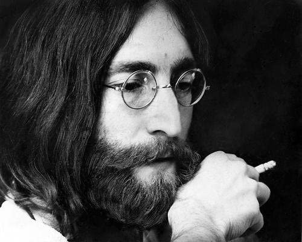

An old John Lennon's portrait in 1970s
John Lennon's timeline:
- 1940: Born in Liverpool, England.
- 1956: Forming his first band, the Quarrymen.
- 1958: John writes "Hello Little Girl," his first song.
- 1961: The Beatles, with John Lennon as front man, debut at Liverpool's Cavern Club.
- 1962: John marries Cynthia Powell.
- 1964: The Beatles begin their first American tour, playing on The Ed Sullivan Show and at The Coliseum in Washington, D.C. and Carnegie Hall in New York City.
- 1966: John states that the Beatles are more popular than Jesus, setting off a backlash against the group and spurring the public burning of Beatle albums.
- 1969: John and Yoko are married on Gibraltar.
- 1970: John debuts his first album, Plastic Ono Band.
- 1971: John records "Imagine" at his home studio at Tittenhurst Park.
- 1974: John makes his final concert appearance at Madison Square Garden with Elton John.
- 1980: John Lennon is assassinated outside the Dakota.
- 1994: John is inducted into Rock and Roll Hall of Fame as a solo artist.